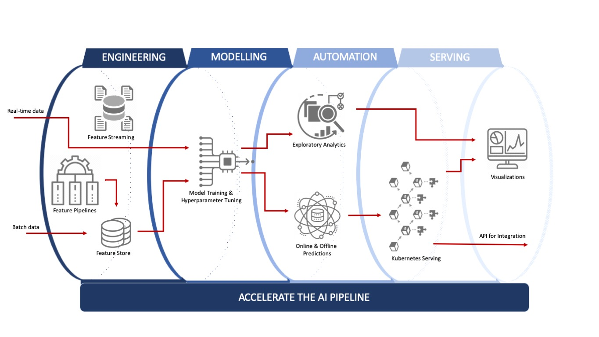

One-Stop Platform for composable, automatic, and scalable ML systems, including distributed training, resource-adaptive scheduling, hyperparameter tuning, compositional model construction, and much more.
DSCW Platform#
{kind=link}
Overview#
The platform is divided into various components to keep it modular and enables easy scaling for deployments. It also focuses on managing high loads without much change and affecting performance.
Let us look into some of the main highlights the platform has to offer.
Support for Global Project across pipelines, notebooks, EDA, datasets etc.
- Users can be part of multiple projects having project specific pipelines, project specific datasets, project specific notebooks, project specific auto EDA etc. This will help users to segregate their work and work with other team members on specific projects making it a seamless and hassle-free experience.
Orchestrates Distributed Workflows and Automates ML Pipelines.
Brings complex integrations of distributed workflows using simple low-code configurations.
Transparent and straightforward operations so that the team can focus only on models, code, and data.
Auto Exploratory Data Analysis: Saves 60% of your time from any ML project by automating many steps, like identifying data issues, missing values, outliers, imbalanced datasets, and many more. It also provides bar charts, heatmaps, and other such visualizations for a detailed understanding of the dataset.
Workbench and notebooks for data scientists, data engineers, data analysts, administrators, etc.
Seamlessly scale pipelines from local development to batch execution and online serving in production
An agnostic architecture layer that improves operational efficiency and namespace segregation, provides differentiated auto-scaling, and thus reduces compute costs when deploying workloads.
Reliable and fully manageable: every workflow and its tasks are isolated, enabling different teams to collaborate without having to worry about affecting each other’s work.
Consistent Identities and Policies across different identity systems from one place by using an abstraction layer driven by a simple declarative API.
Security and Confidentiality: As a pure-play cloud offering, security, confidentiality, availability, and privacy of data are fundamental to the DSCW Platform. Not only do we leverage the inherent capabilities of public clouds in these four areas, but we provide additional capacities like strong compliance, strong encryption, etc.
Telemetry out-of-box: Integrations across all platform components for solutions hosted by the platform. Prebuilt consoles and 3rd party integration hooks for complete Observability, Traceability, Audit, Metrics, Logging, and Error exploration.
Why?#
Cloud-native, Simple and Secure
Less Administration, More Automation
Secure Data Exploration and Ad-hoc Data Analytics
Building scalable data pipelines for Machine Learning
Role-based collaboration of data, workflows, algorithms, and models across teams.
Build and drive your entire data science program under one roof.
Accelerate your AI strategy with Automatic ML.
Keep your existing tools and frameworks, and easily integrate all major AI tools in the DSCW Platform.
Prevent cloud-host lock-in: Seamlessly migrate data, solutions & apps across any cloud provider or on-prem
DSCW Workbench: Empower you to build and deploy portable, scalable machine learning workflows based on Docker containers. It consists of a user interface to manage jobs, an engine to schedule multi-step ML workflows, an SDK to define and manipulate pipelines, and notebooks to interact with the system via SDK.
DSCW Serving: Enables serverless inferencing on Kubernetes. It also provides high abstraction interfaces for ML frameworks like PyTorch, TensorFlow, scikit-learn, etc.
Multi-tenancy: Simplifies user operations to allow users to view and edit only the DSCW components and model artifacts in their configuration. Key concepts under this multi-user isolation include authentication, authorization, administrator, user, and profile.
Training Operators: This enables users to train ML models through operators. For instance, it provides Tensorflow training (TFJob) that runs TensorFlow model training on Kubernetes, PyTorchJob for Pytorch model training, etc.
Notebooks: Kubeflow deployment provides services for managing and spawning AI notebooks. Each DSCW deployment can include multiple notebook servers and each notebook server can include multiple notebooks.
Role Based Access Control : Update permissions, add new users as you grow, and give everyone the exact permissions they need.
Features of the Platform#
Unified interface for AI Projects development and deployment across environments.
Project specific workspaces to data/ML pipelines, track experiments and notebooks, complete versioning/serving of dataset & trained models, create and deploy APIs, server configurations as well as compute/memory resource allocation.
User Management: Attribute-Based Access Control for individual users and teams to restrict access to the above workspaces, data, and fields.
Role-Based Access Control (RBAC) [for Kubernetes Admins, Solution Integrators, Release Managers, Workspace Custodians, Solution Builders, Data Engineers, Data Scientists, Data Custodians, Code Custodians, and Business Owners], allowing configuration of varying levels of access across all Users within the Workspace.
Complete Kubernetes native platform to allow for autoscale. as well as support project/user specific compute/memory limits.
Creating and Scheduling Data, ML & DeepLearning Pipelines
Build data processing pipelines and use Pipelines to construct and visualize the workflow.
Low-code GUI to author, schedule, and monitor these workflows.
Orchestrating Resources and Processing the data
Automate deployment, scale, and manage containerized applications. Utilize in-memory caching and optimize query execution for fast queries against data of any size.
Requires user-specific minimal configuration for setting it up.
DSCW Notebook Server
Notebook Server Hub comprises the dashboard, admin control module, vault connector with proxy API, and the proxy public that interacts with each user’s NB pods in the KubeSpawner present in the server.
Authenticators (Azure AD Connector & Base Auth) are used in the notebook server hub.
As a part of common utilities, it has code snippets (drag and drop) and data connectors (combine various sources of data into one integrated space).
Various kernels like TensorFlow kernel, PyTorch kernel, and python ML kernel allow running the respective Kubernetes cluster where the jobs can be scheduled and run.
A basic version control system with git integration is provided in DSCW Notebooks which allows users to keep their projects updated with the team.
DSCW Workbench
Workbench is a platform to programmatically author, schedule, and monitor workflows. When workflows are defined as code, they become more maintainable, version-able, testable, and collaborative.
Developers, data scientists, or data engineers access Workbench UI (running in K8s pod) through the Ingress Istio Gateway.
WFO server (running in K8s pod) comprises the scheduler and Celery-Kubernetes executors. These executors can run tasks through the celery queue or K8 queue in the backend.
Centralized Exception Manager, Metrics and its Visualization
Collect rich metrics and transform these metrics into meaningful visualizations which are supported by most data source types.
Hosted within your infrastructure, which takes care of data privacy concerns.
Application and Service Monitor, Centralized Observability Console
Understand the structure and health of your service mesh by monitoring traffic flow to infer the topology and report errors for smooth functioning.
Trace transactions between distributed services. Monitor and troubleshoot complex microservices environments.
Telemetry
Inbuilt logging, auditing, and error handling.
Auto-enabled for all pipelines and applications hosted on the platform.
Hooks to extend the traceability data to all major 3rd party providers to auto-integrate into the organization’s existing choice of telemetry infrastructure.
Key storage and management service with enterprise-grade security
Centrally store, access, and deploy secrets across applications, systems, and infrastructure. Using a standardized workflow for distribution and lifecycle management of cryptographic keys across various KMS providers. (multi-cloud support available)
Not only have control of the data, but also replicate it in other regions, other data centers, and other cloud providers.
Locally run secret storage, encryption, and other such small use cases without setup overhead, leading to higher development productivity.
Metadata management and governance capabilities for organizations
Build a catalog of data assets, classify and govern. Data lineage while leveraging collaboration capabilities around these data assets for data scientists, analysts, and the data governance team.
KMS Encrypted Data Warehouse
Can retrieve data from anywhere and overcome issues such as capacity planning and allocation, legacy infrastructure, and siloed data storage that are preventing organizations from realizing the full value of their data.
Manage the ML lifecycle
Includes experimentation, reproducibility, deployment, and a central model registry
Organizations can share projects, models, and results using MLflow.
Moreover, engineering teams can easily move workflows from R&D to staging to production.
Multi-cloud continuous delivery platform
Release software changes with high velocity and confidence.
Interactive Query Service
Fast, consistent queries at high concurrency.
Unlock new types of queries and workflows for clickstream, risk/fraud, APM, supply chain, network telemetry, digital marketing, and many other types of data.
Analytics and Visualization
In just a few clicks, combine data sources, add filters, and drill down into specific information.
Sharing a dashboard requires no programming and building them: even non-technical users can create interactive, real-time visualizations in minutes for huge chunks of data.
Supported on-prem, and on all major cloud platforms.
Real-time data access.
Real-time data access with asynchronous messaging, supporting multiple messaging protocols, with Kafka and Spark Streaming for data consumption and real-time interfacing and serving APIs.
Supports a wide range of messaging sequences such as one-to-one, one-to-multiple, multiple-to-multiple locations, complicated routing, and remote procedure calls.
Store, Share and download data securely with automatic encryption and access controls.
Work on Templated Data Transformations, Machine Learning, and Deep Learning employing Reusable Components Registry (Spark ML, Tensorflow, Pytorch)
Capable of ingesting, buffering, and processing streaming data in real time, so you can derive insights in seconds or minutes instead of hours or days.
Fast and standardized API design, built for teams to drive consistency and discipline across the API development workflow.